Administering KEEN
Evidence storage and retention
Chapter 28 of 30
Evidence storage, integrity and retention
KEEN keeps searchable events, mappings and artifact references in PostgreSQL. The captured artifact bytes live in the configured local directory or S3-compatible bucket. An artifact record stores its URI, SHA-256 digest, content type, size and capture information. Redaction runs before persistence; the recorded artifact checksum describes the stored, redacted bytes.

Diagram source (Mermaid)
flowchart TB
K["KEEN writes a redacted artifact"] --> W{"Configured backend"}
W -->|Local| L["Create a new file; refuse replacement"]
W -->|S3| S["PutObject to the configured bucket"]
P["Bucket and IAM policy"] --> S
H["Hosted mode: conditional create and required versioning"] --> S
S --> V["Return object version ID when available"]
L --> D["PostgreSQL: artifact URI, SHA-256 and event reference"]
V --> D
D --> R["Read the recorded object version for review or export"]
O["Optional Object Lock: operator-configured retention or legal hold"] -.-> S
| Storage control | What KEEN does | What the operator configures |
|---|---|---|
| Local artifacts | Creates a new file and refuses replacement at an existing key. | Filesystem access, disk encryption, backups and protection from privileged modification/deletion. |
| General S3 storage | Writes an object; records and reads its version ID when returned by the provider. | Versioning, encryption, least-privilege IAM, deletion policy and provider support. |
| Hosted S3 write protection | Sends If-None-Match: * and requires a returned version ID. The supplied host-role bucket policy denies deletion and requires conditional creation. | The actual deployed role, bucket policy and versioning; recovery/operator permissions are separate. |
| S3 Object Lock | Uses the bucket’s storage behavior. The artifact writer does not set a per-object legal hold or retention period. | Enable Object Lock and a suitable default retention policy or legal hold through the storage platform. Verify enforcement on new objects. |
Choose the protection your retention policy requires. Versioning preserves object versions; a recorded version ID selects the captured version. SHA-256 detects a change when bytes are verified against the recorded digest. AWS Object Lock protects object versions according to governance/compliance retention and legal holds. Governance bypass depends on granted permissions; compliance retention is stricter. The supplied short-lived hosted bucket configuration leaves Object Lock disabled, so an Object Lock retention guarantee must be established separately for a long-lived installation.
Keep database backups and the referenced object versions together. Protect encryption keys for as long as the retained evidence must remain readable. Review lifecycle rules for current objects, noncurrent versions, abandoned objects and backups. Where Object Lock applies, cleanup must respect its retention and hold rules.
Verify the deployed configuration using the storage provider’s controls and an approved test object: capture it, confirm its version and KEEN reference, test overwrite/deletion with the application role, and check retention metadata if configured. Keep recovery credentials separate from the runtime.
References: AWS Object Lock behavior and Object Lock configuration.
Evidence retention and purging
Administrators can open Evidence retention to choose a maximum event age in days, keep the newest N unsampled events, or keep everything. Settings cover all frameworks and sources. Automatic deletion starts disabled. Age uses the event timestamp in UTC; count-based retention keeps audit-protected events in addition to the configured allowance.
Source type and rule overrides
In Evidence retention, choose Add override, select Source type or Rule ID, and choose an existing value from the dropdown. Source labels and rule descriptions appear alongside their exact identifiers. Saved overrides whose source or rule is no longer available remain labelled Unavailable — saved override so they can be reviewed or removed. Changing the override scope clears the selection. Each override offers Keep everything, Maximum age (days), or Newest events to keep. Source types use the event’s source value, such as github or keen-agent, and cover every connection of that type. The source detail page links to its retention settings. The mapping rule editor links to settings for that rule.
Rule overrides take priority over source-type overrides; source-type overrides take priority over the global policy. A rule override applies to events with recorded automatic mappings from that rule, across frameworks. It does not re-run the rule’s current conditions. If several overridden rules own an event, every applicable rule policy must permit deletion. Keep everything on any of those rules preserves the event.
Count limits apply separately to each policy group. The global count covers events with no applicable override. A source count covers events of that type with no applicable rule override. A rule count covers its automatically mapped events, counting each event once even when it maps to several controls. An event shared by several overridden rules counts in each rule’s allowance. Audit-held events remain additional to every allowance.
Preview calculates the combined effect of the global policy and all proposed overrides. Save applies the changes to existing and future evidence. Remove an override row to restore inheritance. Disabling or deleting a rule does not remove its retention override: existing recorded mappings still determine ownership. Removing or remapping those links can change which policy applies. A deleted rule’s override can be removed in Evidence retention. To stop all automatic deletion, set the global policy and every override to Keep everything, or remove the overrides.
Purge all collected evidence ignores the age, count and Keep everything policies; audit holds and retained artifact references still protect evidence.
Preview before saving a policy. Cleanup uses the worker and scheduler. The status panel shows database progress and stored files awaiting deletion. S3 Object Lock and legal holds are respected; inaccessible files remain queued for retry. Give the worker the same artifact volume as the API, or the required S3 deletion permissions.
To clear collected evidence, type PURGE EVIDENCE, preview and confirm. This removes eligible events, their mappings, attachments, event questions and incident links up to the purge start time. All ingesters, agents and webhooks pause while a manual purge is queued or running and for five minutes after completion or cancellation. Active database transactions finish before deletion. Existing per-source pause settings are preserved. Frameworks, rules, source settings, ISMS records and the administrative audit trail remain. Upstream sources can resend deleted events after ingestion resumes.
Audit-sampled events remain protected until every audit holding them is deleted. Removing a displayed sample preserves the hold. Administrators can use Delete on the Audits list or Delete audit on the detail page. A deleted audit releases its holds; the events become eligible for the next applicable retention pass or purge. Sampled effectiveness measurements also protect their linked events.
Stored-file cleanup is durable and continues after cancellation or disabling retention. Exact S3 versions are deleted where recorded. Legacy versionless URIs in versioned buckets require operator review to identify the correct version. Configure S3 lifecycle policies to preserve evidence held for audits.